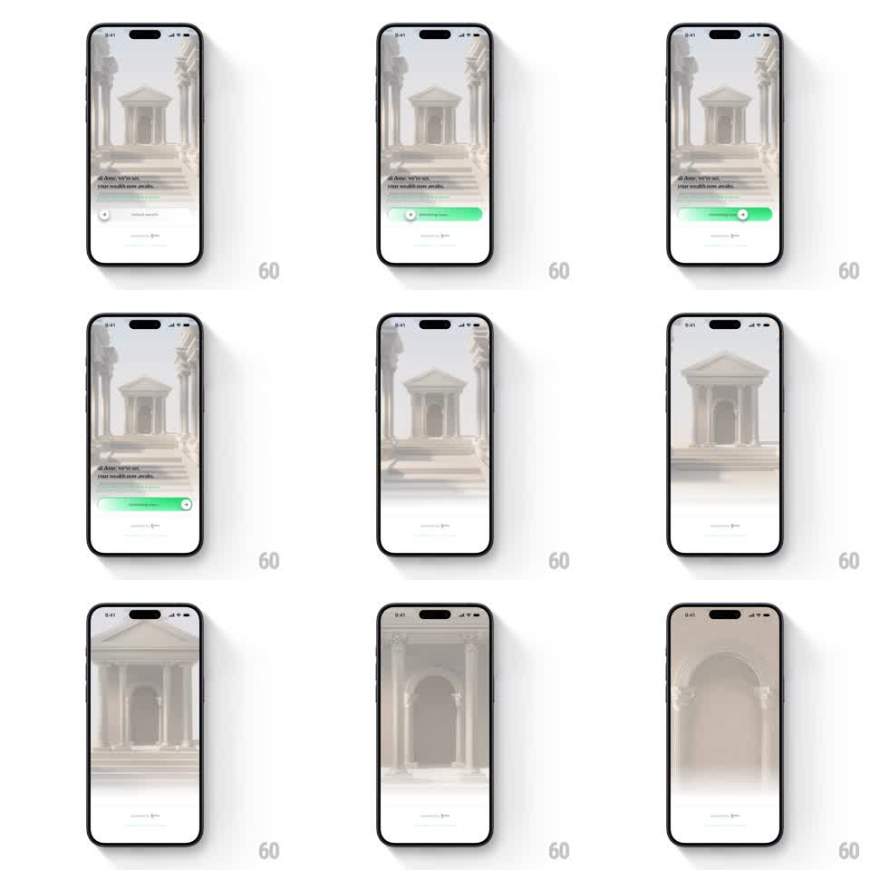

Media
Frame-by-frame

Rebuild this interaction 1:1: CRED's swipe-to-unlock intro - dragging the green unlock slider across the bottom sheet pushes the camera into the 3D marble temple behind, the copy fades, and the architecture fills the screen.

Rebuild this interaction 1:1: CRED's swipe-to-unlock intro - dragging the green unlock slider across the bottom sheet pushes the camera into the 3D marble temple behind, the copy fades, and the architecture fills the screen. ## Integration Integration: stack-agnostic spec - springs given as stiffness/damping, timed motions as duration + curve; map every value to your framework and animation library of choice. ## Scene CRED intro screen: a soft-lit 3D render of a classical marble temple (columns, pediment, arched doorway) behind a white bottom sheet carrying "all done. we've set..." copy, a thin progress underline, and a "swipe to unlock" slider - a pale track with a green knob. ## Motion spec Pattern: gesture-coupled unlock - slider drag drives a camera push-in on the background. - The slider is 1:1 with the drag: the knob tracks the finger, the track fills green up to the knob, and the fill's glow brightens toward the end. - The background scales with drag progress: temple scale 1 -> 1.6 mapped to drag 0 -> 100%, so the architecture approaches as you swipe (a dolly-in, no parallax shift). - The bottom sheet's copy fades out progressively (opacity 1 -> 0 over drag 40% -> 90%). - On release past ~70%: the knob snaps to the end (spring ~500/25), the fill completes, and the camera continues pushing through the archway (scale -> 2.2, 600ms, ease-in) as the sheet slides down and away (translateY, 500ms). - On release below threshold: knob and fill spring back (spring ~300/18), background returns to scale 1. ## Calibration - Every visual (scale, fill, fade) is scrubbed by the same drag progress - nothing runs on its own clock until the commit. - The temple render is soft and desaturated; the green slider is the only saturated element. ## Reduced motion Slider fills on tap; background crossfades to the zoomed state (400ms). ## Don't miss - The push-in must feel like entering the doorway - center the zoom on the arch, not the image center. - The sheet's shadow over the background shrinks as the sheet drops during the commit.